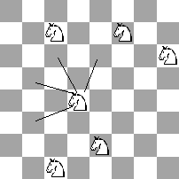
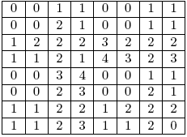

Member Search

|
Introduction
The games we will talk about are two-person games with perfect
information, no chance moves, and a win-or-lose outcome. In these games,
players usually alternate moves until they reach a terminal position.
After that, one player is declared the winner and the other the loser.
Most card games don't fit this category, for example, because we do not
have information about what cards our opponent has.
First we will look at the basic division of positions to winning and losing. After that we will master the most important game -- the Game of Nim -- and see how understanding it will help us to play composite games. We will not be able to play many of the games without decomposing them to smaller parts (sub-games), pre-computing some values for them, and then obtaining the result by combining these values.
The Basics
A simple example is the following game, played by two players who take
turns moving. At the beginning there are n coins. When it is a player's
turn he can take away 1, 3 or 4 coins. The player who takes the last one
away is declared the winner (in other words, the player who can not
make a move is the loser). The question is: For what n will the first
player win if they both play optimally?
We can see that n = 1, 3, 4 are winning positions for the first player, because he can simply take all the coins. For n=0 there are no possible moves -- the game is finished -- so it is the losing position for the first player, because he can not make a move from it. If n=2 the first player has only one option, to remove 1 coin. If n=5 or 6 a player can move to 2 (by removing 3 or 4 coins), and he is in a winning position. If n=7 a player can move only to 3, 4, 6, but from all of them his opponent can win…
Positions have the following properties:
- All terminal positions are losing.
- If a player is able to move to a losing position then he is in a winning position.
- If a player is able to move only to the winning positions then he is in a losing position.
These properties could be used to create a simple recursive algorithm WL-Algorithm:
boolean isWinning(position pos) {
moves[] = possible positions to which I can move from the
position pos;
for (all x in moves)
if (!isWinning(x)) return true;
return false;
}
Table 1: Game with 11 coins and subtraction set {1, 3, 4}:
| n | 0 | 1 | 2 | 3 | 4 | 5 | 6 | 7 | 8 | 9 | 10 | 11 |
| position | L | W | L | W | W | W | W | L | W | L | W | W |
This game could be played also with a rule (usually called the misere play rule) that the player who takes away the last coin is declared the loser. You need to change only the behavior for the terminal positions in WL-Algorithm. Table 1 will change to this:
| n | 0 | 1 | 2 | 3 | 4 | 5 | 6 | 7 | 8 | 9 | 10 | 11 |
| position | W | L | W | L | W | W | W | W | L | W | L | W |
It can be seen that whether a position is winning or losing depends
only on the last k positions, where k is the maximum number of coins we
can take away. While there are only 2^k possible values for the
sequences of the length k, our sequence will become periodic. You can
try to use this observation to solve the following problem:
SRM 330: LongLongNim
The Game of Nim
The most famous mathematical game is probably the Game of Nim. This is
the game that you will probably encounter the most times and there are
many variations on it, as well as games that can be solved by using the
knowledge of how to play the game. Usually you will meet them as
Division I 1000 pointers (though hopefully your next encounter will seem
much easier). Although these problems often require a clever idea, they
are usually very easy to code.
Rules of the Game of Nim: There are n piles of coins. When it is a player's turn he chooses one pile and takes at least one coin from it. If someone is unable to move he loses (so the one who removes the last coin is the winner).
Let n1, n2, … nk, be the sizes of the piles. It is a losing position for the player whose turn it is if and only if n1 xor n2 xor .. xor nk = 0.
How is xor being computed?
6 = (110)2 1 1 0
9 = (1001)2 1 0 0 1
3 = (11)2 1 1
--------
1 1 0 0
- xor of two logic values is true if and only if one of them is true and the second is false
- when computing xor of integers, first write them as binary numbers and then apply xor on columns.
- so xor of even number of 1s is 0 and xor of odd number of 1s is 1
Why does it work?
- From the losing positions we can move only to the winning ones:
- if xor of the sizes of the piles is 0 then it will be changed after our move (at least one 1 will be changed to 0, so in that column will be odd number of 1s). - From the winning positions it is possible to move to at least one losing:
- if xor of the sizes of the piles is not 0 we can change it to 0 by finding the left most column where the number of 1s is odd, changing one of them to 0 and then by changing 0s or 1s on the right side of it to gain even number of 1s in every column.
Examples:
Position (1, 2, 3) is losing because 1 xor 2 xor 3 = (1)2 xor (10)2 xor (11)2 = 0
Position (7, 4, 1) is winning because 7 xor 4 xor 1 = (111)2 xor (10)2 xor (1)2 = (10)2 = 2
Example problems:
SRM 338: CakeParty
SRM 309: StoneGameStrategist
The last one example problem is harder, because it is not so easy to identify where the sizes of piles are hidden. Small hint: Notice the differences between the sizes of piles. If you would not be able to figure it out you can find the solution in the SRM 309 Problem set & Analysis.
Composite games - Grundy numbers
Example game: N x N chessboard with K knights on it. Unlike a
knight in a traditional game of chess, these can move only as shown in
the picture below (so the sum of coordinates is decreased in every
move). There can be more than one knight on the same square at the same
time. Two players take turns moving and, when it is a player's, turn he
chooses one of the knights and moves it. A player who is not able to
make a move is declared the loser.

This is the same as if we had K chessboards with exactly one knight on every chessboard. This is the ordinary sum of K games and it can be solved by using the grundy numbers. We assign grundy number to every subgame according to which size of the pile in the Game of Nim it is equivalent to. When we know how to play Nim we will be able to play this game as well.
int grundyNumber(position pos) {
moves[] = possible positions to which I can move from pos
set s;
for (all x in moves) insert into s grundyNumber(x);
//return the smallest non-negative integer not in the set s;
int ret=0;
while (s.contains(ret)) ret++;
return ret;
}
The following table shows grundy numbers for an 8 x 8 board:

We could try to solve the original problem with our WL-Algorithm, but it would time out because of the large number of possible positions.
A better approach is to compute grundy numbers for an N x N chessboard in O(n2) time and then xor these K (one for every horse) values. If their xor is 0 then we are in a losing position, otherwise we are in a winning position.
Why is the pile of Nim equivalent to the subgame if its size is equal to the grundy number of that subgame?
- If we decrease the size of the pile in Nim from A to B, we can move also in the subgame to the position with the grundy number B. (Our current position had grundy number A so it means we could move to positions with all smaller grundy numbers, otherwise the grundy number of our position would not be A.)
- If we are in the subgame at a position with a grundy number higher than 0, by moving in it and decreasing its grundy number we can also decrease the size of pile in the Nim.
- If we are in the subgame at the position with grundy number 0, by moving from that we will get to a position with a grundy number higher than 0. Because of that, from such a position it is possible to move back to 0. By doing that we can nullify every move from the position from grundy number 0.
Example problems:
SRM 216: Roxor
Other composite games
It doesn't happen often, but you can occasionally encounter games with a
slightly different set of rules. For example, you might see the
following changes:
1. When it is a player's move he can choose some of the horses (at least one) and move with all the chosen ones.
Solution: You are in a losing position if and only if every horse
is in a losing position on his own chessboard (so the grundy number for
every square, where the horse is, is 0).
2. When it is a player's move he can choose some of the horses (at
least one), but not all of them, and move with all chosen ones.
Solution: You are in a losing position if and only if the grundy numbers of all the positions, where horses are, are the same.
You can verify correctness of both solutions by verifying the basic properties (from a winning position it is possible to move to a losing one and from a losing position it is possible to move only to the winning ones). Of course, everything works for all other composite games with these rules (not only for horse games).
Homework: What would be changed if a player had to move with every horse and would lose if he were not able to do so?
Conclusion
Don't worry if you see a game problem during SRM -- it might be similar
to one the games described above, or it could be reduced to one of them.
If not, just think about it on concrete examples. Once you figure it
out the coding part is usually very simple and straightforward. Good
luck and have fun.
Other resources:
Collection of many mathematical games
Introductory combinatorial game theory
Winning ways for your mathematical plays by Elwyn R. Berlekamp, John H. Conway, Richard K. Guy